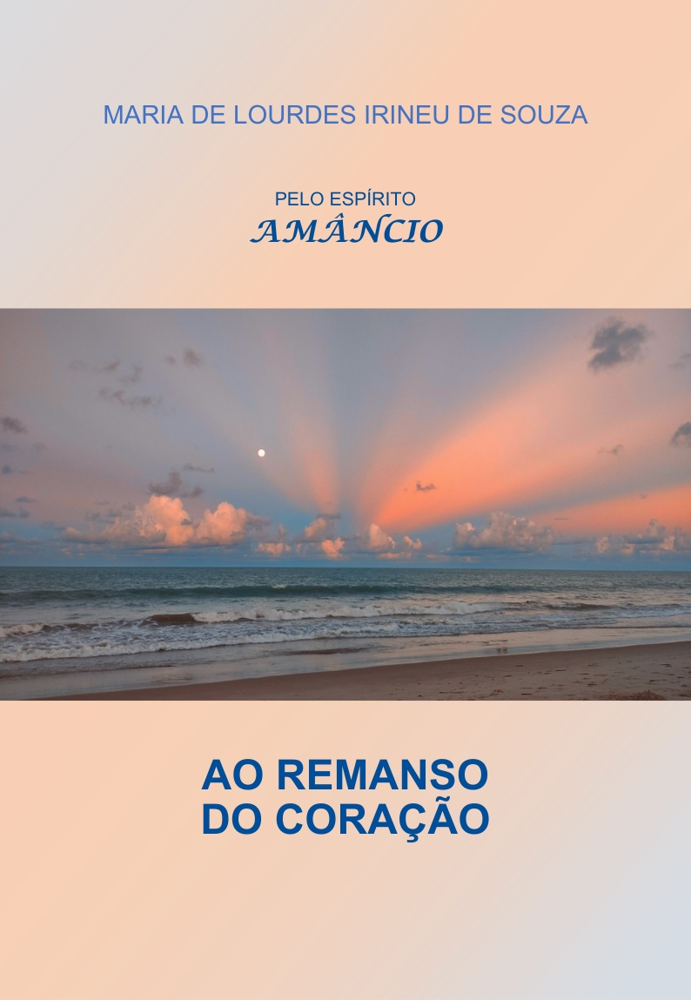

Livro 1 da série
Ao Remanso do Coração
Maria de Lourdes Irineu de Souza · pelo espírito Amâncio
Comprar o e-book na Amazon Leia no Kindle, no celular, no tablet ou no computadorQueridos Amigos,
Há palavras que devem ser silenciadas. Outras, que devem ser proclamadas, projetadas no espaço, nas vidas.
Palavras de luz, de esperança e amor devem percorrer o caminho do coração, libertando-nos dos entraves para a conquista interior da paz e da alegria.
A renovação espiritual é premente. Os círculos convergem para a regeneração da Terra. Os sentimentos apurados devem sobressair no emaranhado do sentir e das emoções que fluem ininterruptamente.
Haverá paz. Amor. Fraternidade.
Porque é o sentido da evolução. E evoluir sempre é o destino de todos.
Renascemos com esperança. E a aguilhoamos, nas incertezas e na imaturidade do espírito. Aprendemos, contudo, e crescemos moral e intelectualmente, compreendendo que todas as vicissitudes são degraus de evolução.
O movimento evolutivo da humanidade é o caminho de luz a que nos convidou Jesus. Encontremos em cada passo a confiança, a certeza de que ao vibrarmos amor e exercitamos a caridade e a fraternidade aceleramos o processo de redenção do mundo e ingressamos numa era de equilíbrio e harmonia nas vidas, nos corações.
Amâncio
Com essas palavras o espírito Amâncio apresenta O SOPRO DA NOVA ERA, uma série psicografada de cinco livros, em que nos leva a refletir sobre as perspectivas individuais e coletivas do novo tempo, pautado nas transformações morais e evolutivas, no amor, na fé, na compreensão e na caridade, valores que orientam o caminho da fraternidade com Jesus.
AO REMANSO DO CORAÇÃO, o primeiro livro da série, vem falar de amor e esperança. Convidar à renovação. Recordar o Mestre, suas palavras, ensinamentos, o seu impacto na transformação interior de cada ser, nos apontar novos caminhos, novo tempo.
Finalmente já está disponível em formato e-book.
Os outros quatro volumes serão publicados a seguir.
Serei grata se puderem ajudar a divulgar. Todo recurso obtido será destinado a Núcleos e atividades de estudo, evangelização, assistência e divulgação da doutrina espírita.
E agradeço, especialmente, o incentivo e o apoio que tenho recebido para seguir nesta jornada.
“No caminho do amor a esperança é estrela-guia”, como diz Amâncio, e “uma obra de amor deve fluir com a certeza de que é o amor que flui por onde passar.”
Que Jesus nos ilumine e possamos continuar a tarefa de amor e luz.
João Pessoa,
Maria de Lourdes Irineu de Souza
Sobre o livro

Remete o leitor ao tempo de Jesus, a passagens, significativas umas, singelas outras, que discorrem sobre a essência de seus ensinamentos e o impacto na transformação interior daqueles que vivenciaram esses sublimes momentos, envolvendo-os e conduzindo-os em direção à luz radiante do amor.
Ao Remanso do Coração vem falar de amor e esperança, convidar à renovação e a seguir com fé e confiança no coração, nesse caminho de luz para um novo tempo, uma Nova Era de amor e fraternidade.
A coleção
- Ao Remanso do CoraçãoVolume 1 · disponível
- Volume 2em breve
- Volume 3em breve
- Volume 4em breve
- Volume 5em breve